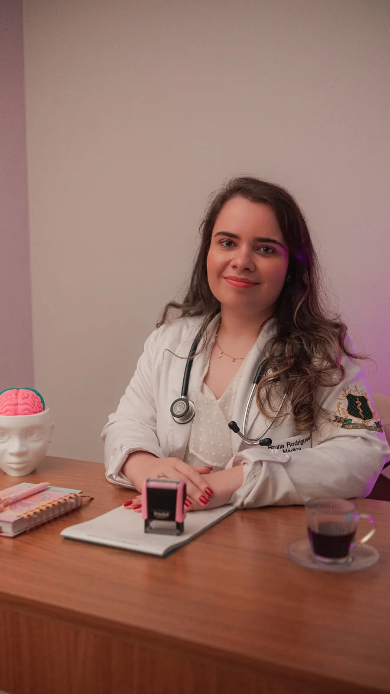
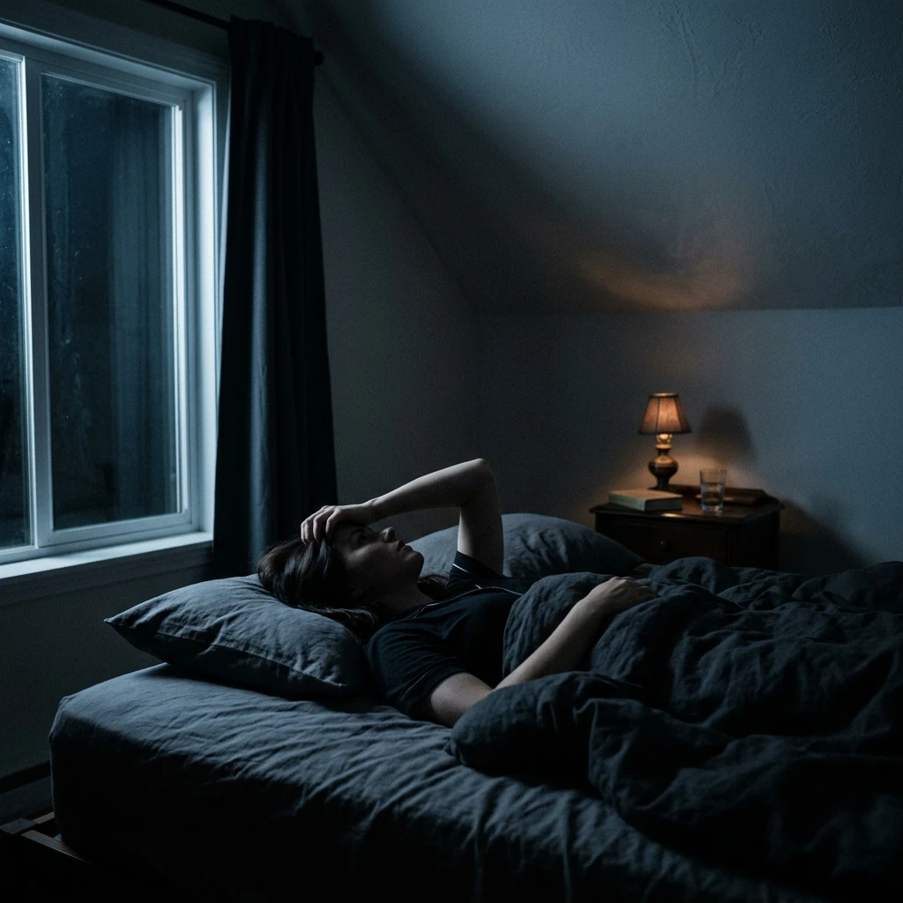
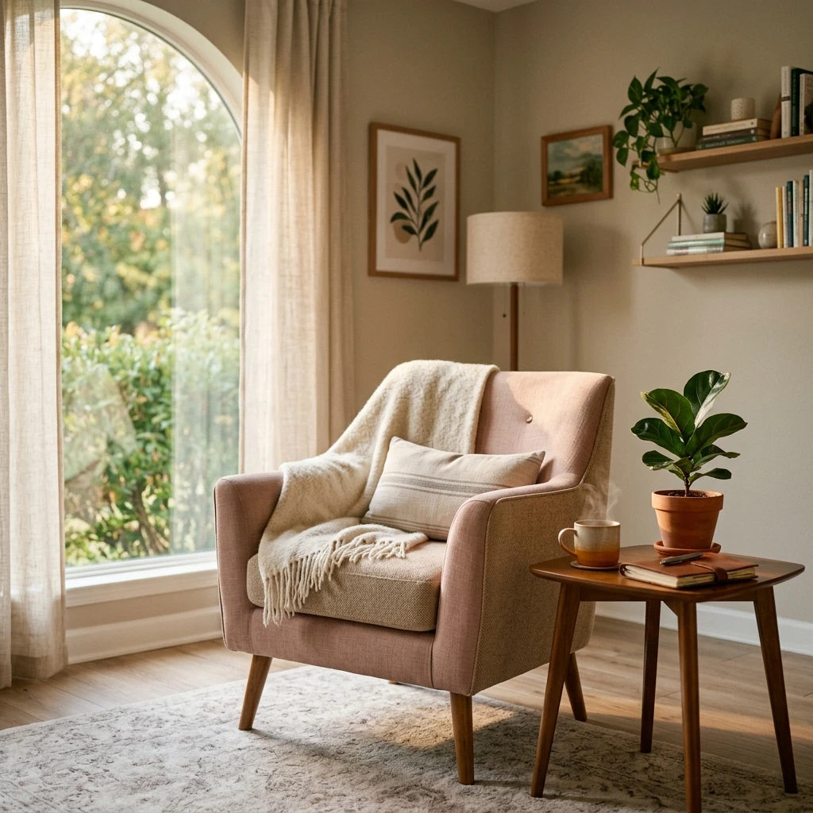
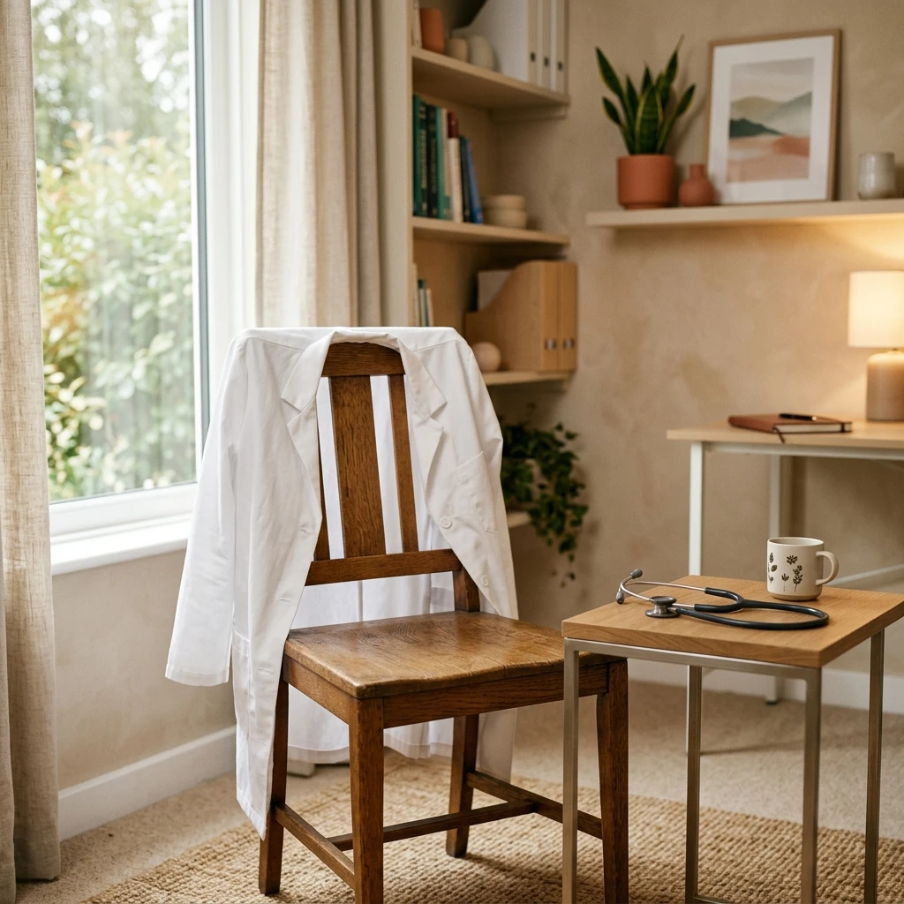
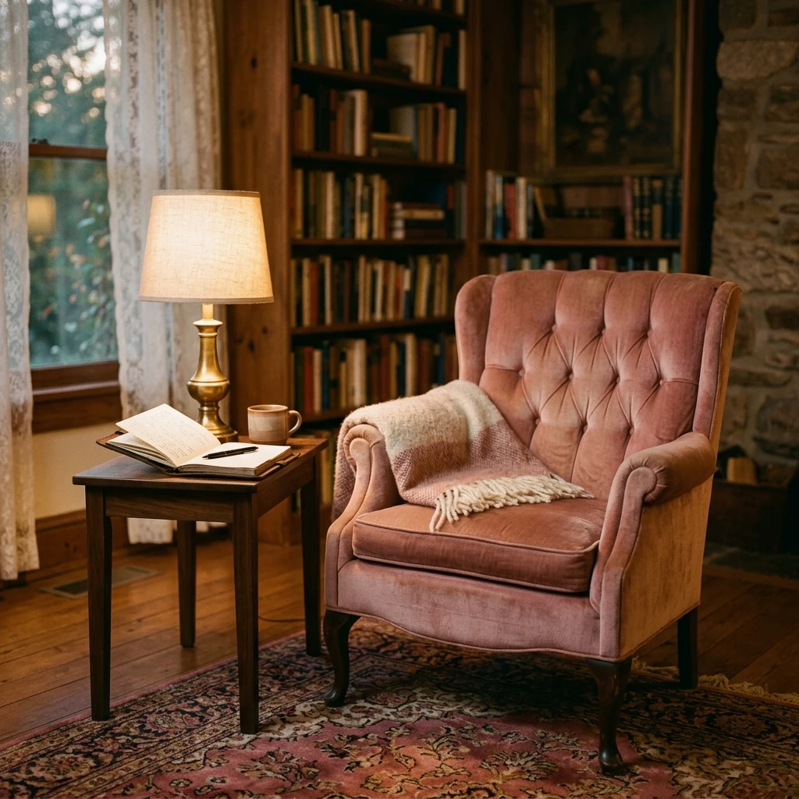
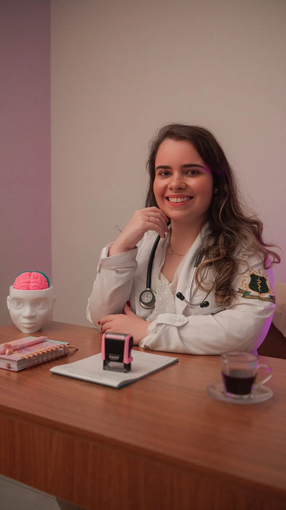
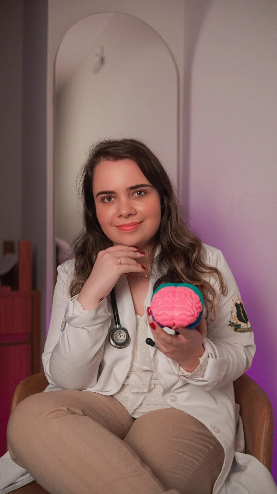
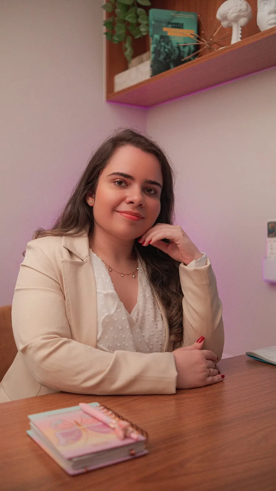
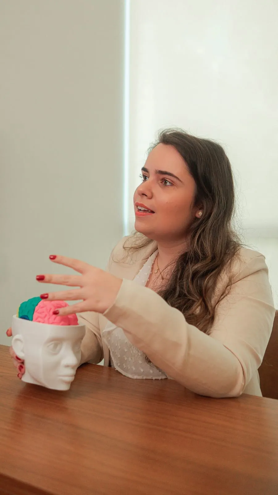

Ansiedade que não desliga
Preocupação constante, aperto no peito, sono ruim e a sensação de estar sempre em alerta.
Medicina · Psiquiatria · Psicanálise
Por trás de cada sintoma existe uma pessoa. Cuidado integral que une Clínica Geral, Psiquiatria e Psicanálise — com escuta ativa, empatia e um plano de tratamento pensado para você. Atendimento presencial, online e domiciliar.

Quando buscar ajuda
Muitos sinais são tratados como cansaço ou fase difícil. Reconhecê-los é o primeiro passo — e não é preciso esperar chegar ao limite para pedir ajuda.
Preocupação constante, aperto no peito, sono ruim e a sensação de estar sempre em alerta.
Perda de prazer, cansaço desproporcional, choro fácil ou vontade de se isolar.
Dores, tontura ou queixas físicas recorrentes que os exames não justificam.
Mudanças bruscas que afetam trabalho, estudos e relações próximas.
Remédios iniciados por conta própria, mantidos há anos ou nunca reavaliados.
Perdas, separações, adoecimento ou fases de transição que pedem escuta e apoio.


Com o cuidado certo, esses sinais têm tratamento.
Agendar avaliaçãoServiços
Presencial, por telemedicina ou no conforto da sua casa — você escolhe o formato, a condução clínica é a mesma.
Avaliação diagnóstica cuidadosa, condução medicamentosa quando necessária e acompanhamento contínuo.

Cuidado da saúde física com a mesma atenção dada à mental: queixas gerais, prevenção e manejo de condições crônicas.

Sessões de terapia com escuta qualificada, para trabalhar o que sustenta o sofrimento além do sintoma.




Sobre a médica
Cuidar da mente é um ato de coragem — e cada história merece ser ouvida por inteiro.
Médica generalista, pós-graduada em Psiquiatria e psicanalista. O consultório nasceu do desejo de unir Clínica Geral, Psiquiatria e Psicanálise em um cuidado verdadeiramente integral — porque saúde física e saúde mental não se separam.
Atende adolescentes, adultos e idosos, com escuta qualificada e tratamento individualizado. Cada consulta considera a história, o contexto e o ritmo de quem está ali — não apenas o quadro clínico.
Registro profissional — CRM 52.0123363-7
Como funciona
Um processo simples e transparente, pensado para você chegar à primeira consulta com clareza sobre cada etapa.
Você chama no WhatsApp e conta, com suas palavras, o que está sentindo ou buscando.
Combinamos juntos o formato — presencial, online ou domiciliar —, horário e valores, sem letras miúdas.
Avaliação cuidadosa, com tempo dedicado à sua história — não apenas ao sintoma que trouxe você aqui.
Acompanhamento contínuo, ajustado ao seu ritmo, com a mesma médica em todas as etapas.
Dúvidas frequentes
Selecione uma pergunta para ler a resposta da Dra. Bruna, como uma carta pessoal.
O atendimento é exclusivamente particular, sem convênios. Os valores e as formas de pagamento são informados no contato pelo WhatsApp, antes do agendamento.
Bruna Campos
A psiquiatria avalia o quadro clínico e, quando indicado, conduz o tratamento medicamentoso. A psicanálise trabalha a história e os sentidos por trás do sofrimento, em sessões de terapia. Aqui as duas frentes podem caminhar juntas, com a mesma médica acompanhando o processo.
Bruna Campos
É uma consulta por vídeo, com a mesma duração e conduta da presencial, respeitando as normas do CFM. Você recebe o link e, quando necessário, receita e atestados em formato digital assinado.
Bruna Campos
Sim. O atendimento contempla adolescentes, adultos e idosos. Para adolescentes, a presença de um responsável é necessária no primeiro atendimento.
Bruna Campos
Localização
Avenida das Américas, 18.000 — sala 605A
Recreio dos Bandeirantes · Rio de Janeiro / RJ
CEP 22790-704
HorárioSexta-feira 8h–18h · Sábado 8h–16h
Telefone e WhatsApp(21) 97590-6877
Atendimento domiciliarRecreio, Vargem Grande, Vargem Pequena, Campo Grande, Barra da Tijuca, Freguesia, Jacarepaguá e Anil
Agendamento
Preencha os campos e a mensagem será aberta no WhatsApp, já organizada — assim a Dra. Bruna entende o seu caso antes do primeiro contato. Atendimento particular, sem convênio.
Resposta ágilDireto no seu WhatsApp
Sem burocraciaSem convênio, sem formulário longo